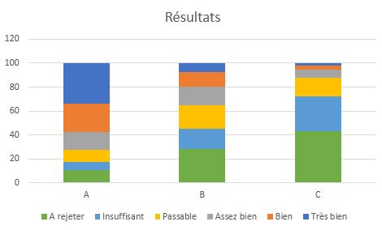

Vertical Tabs
Description :
Le scrutin uninominal majoritaire est aujourd’hui le système de vote le plus couramment utilisé. Chaque électeur va voter pour une et une seule des propositions, celle regroupant le plus de vote sera désignée vainqueur.
Exemple :
Soit trois candidats A, B, C. A obtient 3 voix, B 8 voix et C 5 voix. B est donc désigné vainqueur du vote
Description :
La méthode de Condorcet consiste en un classement des candidats. Le vainqueur du vote est alors le candidat qui aura le plus souvent dominé les autres lors de « duels ». Cette méthode est très peu utilisée aujourd’hui car lourde à mettre en place. Cependant, VoteChain permet de créer très facilement un vote utilisant ce système.
Exemple :
Considérons une assemblée de 60 votants ayant le choix entre trois propositions a, b et c.
Les préférences se répartissent ainsi (en notant a > b, le fait que a est préféré à b) :
23 votants préfèrent : a > c > b
19 votants préfèrent : b > c > a
16 votants préfèrent : c > b > a
2 votants préfèrent : c > a > b
En réalisant les comparaisons majoritaires par paires, on obtient :
35 préfèrent b > a contre 25 pour a > b
41 préfèrent c > b contre 19 pour b > c
37 préfèrent c > a contre 23 pour a > c
Ce qui conduit à la préférence majoritaire c > b > a. c est donc désigné vainqueur du vote.
Description :
Le vote par jugement majoritaire consiste à juger indépendamment chaque candidat au moyen d’une appréciation : très bien, bien, assez bien, passable, insuffisant, à rejeter. Le vainqueur sera alors le candidat le mieux évalué par une majorité d’électeurs. Ce mode de scrutin permet d’avoir une forte indépendance entre les candidats, car une appréciation positive pour un candidat ne se fait pas au détriment des autres.
Exemple :
Soit trois candidats, A, B, C. Chaque électeur va attribuer une mention à chacun de ces candidats.
Par exemple, Yasmine évalue A comme bien, B comme insuffisant et C comme passable.
Le décompte permet de savoir combien de personnes ont voté pour chaque mention. On peut représenter le résultat sous forme graphique :

Le résultat pour un candidat sera la mention pour laquelle au moins 50% des appréciations sera aussi bonne.
Ici par exemple, la mention finale du candidat A est bien, celle de B passable et celle de C insuffisante. A est donc déclaré vainqueur.
En cas d'égalité, on regarde la valeur du pourcentage de l'appréciation strictement supérieure.